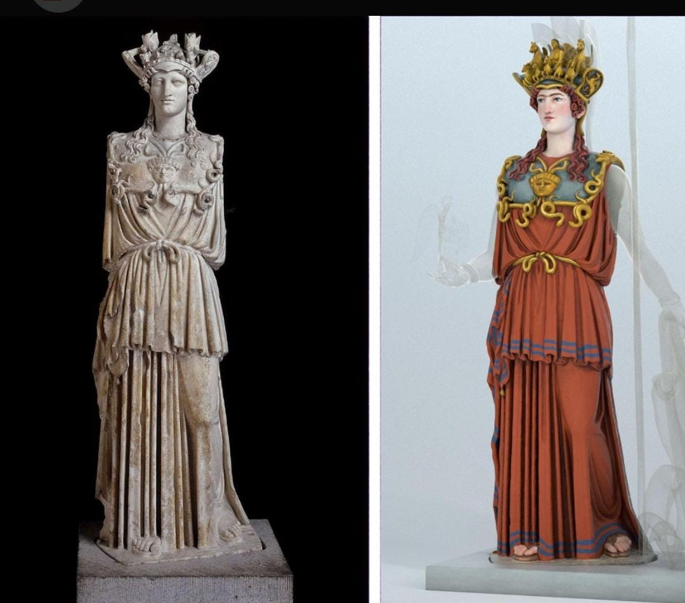
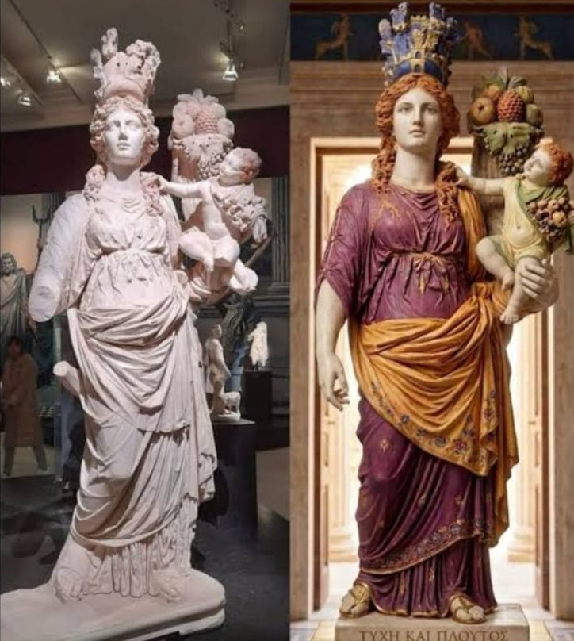

IAtena Partenos: cópia em mármore (esq.) e reconstituição com as cores originais (dir.).
As estátuas gregas não eram brancas
Muitas esculturas que hoje vemos brancas eram, na verdade, pintadas com cores vibrantes: roupas vermelhas, cabelos ruivos, detalhes em dourado. Com o passar dos séculos, a pintura se desgastou e só o mármore ficou.
Palavra-chave: policromia. Significa “muitas cores”. Pesquisadores usam luz ultravioleta para encontrar restos de tinta nas estátuas.